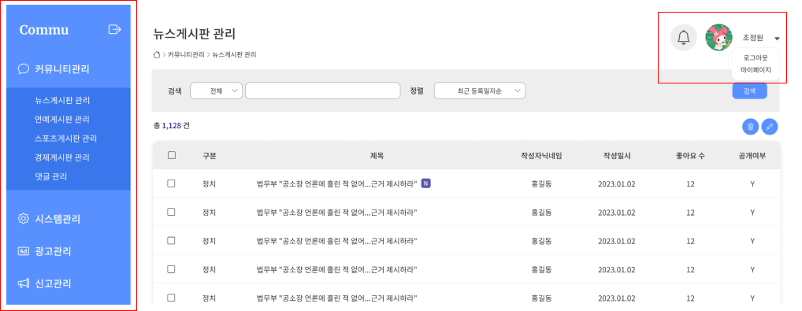
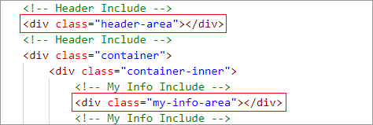
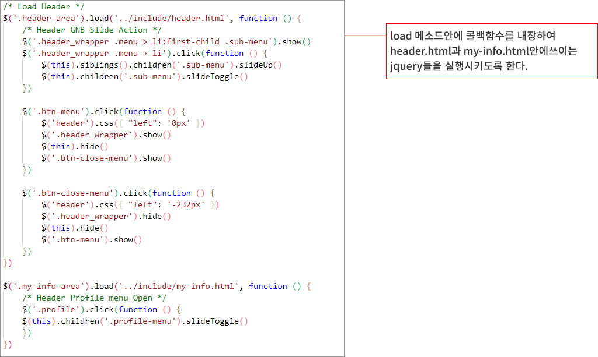
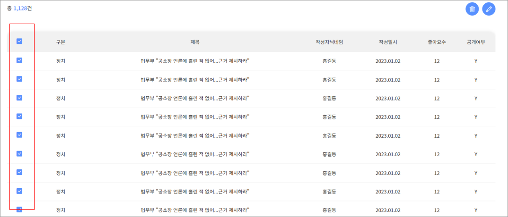
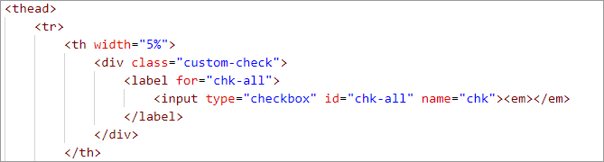
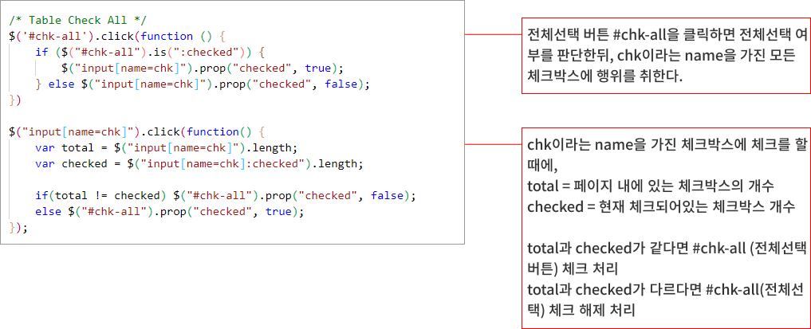

사용자들의 게시글들을 관리하고 커뮤니티 페이지의 전반적인 관리를 위한 페이지를 만들었습니다. 관리자 페이지에서는 Header가 고정적이고, 관리자의 사용자 정보도 고정적으로 이루어져 있는데 그것들을 공통으로 만들었고, 관리자페이지에서 공통으로 쓰이고, 자주 쓰이는 table 속성도 공통으로 css를 제작하였습니다.
해당 부분은 공통으로 쓰인는 부분이기 때문에 load 메소드를 사용하여 필요할때마다 로드하여 쓰도록 한다.
HTML
js
리스트페이지의 전체선택 버튼을 누르면 리스트의 전체 항목에 체크되고, 그상태에서 하나의 항목이라도 선택 해제시 전체 선택 버튼이 해제된다.
HTML
CSS
